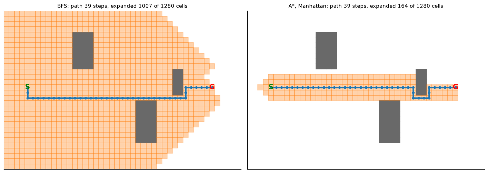

Search and Games
DCS 404 · Data Science and Machine Learning
In the Principles of AI module we built a Tic-Tac-Toe agent that plays at random, and counted every possible game: 255,168 of them. This module turns that random player into one that never loses. Then it uses the same ideas to find the shortest way through a maze and to play Connect Four, a game far too big to search to the end.
None of these agents learn anything from data. They search: they look at possible futures and pick the move that leads to the best one. Along the way you'll meet the core algorithms of classical AI. Heuristics are educated guesses that tell a search where to look. A* is the shortest-path algorithm inside route planners and game engines. Minimax with alpha-beta pruning is the algorithm behind every classical chess program.
This notebook covers the Week 3 reading, Artificial Intelligence and Machine Learning Fundamentals (Nagy, 2018), Chapter 2 — AI with Search Techniques and Games.
How to work through this
Run every code cell in order (Shift + Enter). Complete the Principles of AI module first. Setup
below re-creates its Tic-Tac-Toe helpers, so this notebook also runs on its own.
Reading alongside the textbook:
| This notebook | Textbook, Chapter 2 |
|---|---|
| 1. Teaching the agent rules | pp. 30–34 (Exercise 4, Activities 2–3) |
| 2. Heuristics | pp. 35–42 (Exercise 5) |
| 3. Pathfinding with BFS and A* | pp. 42–63 (Exercises 6–7) |
| 4–6. Minimax, alpha-beta, Negamax | pp. 63–77 |
| 7. Connect Four | Activity 4 |
The book's Chapter 2 code has several bugs, some of which change the answer. This notebook fixes them as it goes, and Section 8 lists every correction. Nothing here needs a library beyond NumPy and Matplotlib.
Learning objectives
After completing this module you will be able to:
- Shrink a game's state space with rules, symmetry and forced moves, and prove that an agent can't lose by checking it against every possible opponent reply.
- Explain what a heuristic is, write one for a game, and say what makes a heuristic admissible.
- Implement A* pathfinding, and explain why it finds the shortest path when greedy best-first search doesn't.
- Implement Minimax, speed it up with alpha-beta pruning, and simplify it to Negamax, then build a Tic-Tac-Toe player that never loses.
- Write a depth-limited game AI with a heuristic evaluation for a game too large to search to the end (Connect Four).
Setup
Run this once. It loads the libraries and re-creates the Tic-Tac-Toe helpers from the Principles of AI
module. The board is a 9-character string, cells 0–8 left to right, top to bottom. Our AI plays X and
moves first.
import math
import heapq
import random
import time
from collections import deque, Counter
from itertools import permutations
import numpy as np
import matplotlib.pyplot as plt
from matplotlib.patches import Rectangle
plt.rcParams.update({
"figure.figsize": (7, 4.5),
"figure.dpi": 110,
"axes.grid": True,
"grid.alpha": 0.3,
"axes.spines.top": False,
"axes.spines.right": False,
"font.size": 11,
})
RANDOM_STATE = 0
rng = random.Random(RANDOM_STATE)
# Set to True to play against the AIs yourself (uses input(); leave False when running all cells)
INTERACTIVE = False
print("Ready.")
Ready.
EMPTY, AI, OPP = ".", "X", "O"
LINES = [(0, 1, 2), (3, 4, 5), (6, 7, 8), # rows
(0, 3, 6), (1, 4, 7), (2, 5, 8), # columns
(0, 4, 8), (2, 4, 6)] # diagonals
def other(sign):
return OPP if sign == AI else AI
def winner(board):
'''Return 'X' or 'O' if someone has three in a line, else EMPTY.'''
for i, j, k in LINES:
if board[i] == board[j] == board[k] != EMPTY:
return board[i]
return EMPTY
def is_over(board):
return winner(board) != EMPTY or EMPTY not in board
def all_moves(board, sign):
'''The successor function: every board reachable by `sign` placing one mark.'''
return [board[:i] + sign + board[i + 1:] for i, c in enumerate(board) if c == EMPTY]
def print_board(board):
for r in range(3):
print(" " + " | ".join(board[3 * r:3 * r + 3]))
print()
def draw_board(board, ax, title="", values=None):
'''Draw a board; optional `values` (len 9) are printed small in empty cells (used for heuristics).'''
ax.set_xlim(0, 3); ax.set_ylim(0, 3); ax.set_aspect("equal"); ax.axis("off")
for k in (1, 2):
ax.plot([k, k], [0, 3], color="black", lw=2); ax.plot([0, 3], [k, k], color="black", lw=2)
for i, c in enumerate(board):
x, y = i % 3 + 0.5, 2.5 - i // 3
if c != EMPTY:
ax.text(x, y, c, ha="center", va="center", fontsize=28, fontweight="bold",
color="tab:blue" if c == AI else "tab:red")
elif values is not None:
ax.text(x, y, str(values[i]), ha="center", va="center", fontsize=13, color="tab:green")
else:
ax.text(x + 0.33, y - 0.33, str(i), fontsize=8, color="lightgrey")
ax.set_title(title, fontsize=11)
def random_policy(board, sign):
return rng.choice(all_moves(board, sign))
def play_game(policy_x, policy_o, start=EMPTY * 9):
'''Play one game; return the final board.'''
board, turn = start, AI
while not is_over(board):
board = (policy_x if turn == AI else policy_o)(board, turn)
turn = other(turn)
return board
def tournament(policy_x, policy_o, n=1000):
results = Counter()
for _ in range(n):
w = winner(play_game(policy_x, policy_o))
results["X wins" if w == AI else "O wins" if w == OPP else "draw"] += 1
return {k: results[k] for k in ("X wins", "O wins", "draw")}
print("Tic-Tac-Toe helpers ready:", [f.__name__ for f in (winner, is_over, all_moves, draw_board, play_game, tournament)])
Tic-Tac-Toe helpers ready: ['winner', 'is_over', 'all_moves', 'draw_board', 'play_game', 'tournament']
1. Teaching the agent with rules (textbook Exercise 4, Activities 2–3)
We'll improve the X player in three steps, adding one rule at a time. After each step we check it in two ways:
- Exhaustive check. Play X's policy against every possible O reply, and count every possible game. This is a guarantee: if no game in this count is a loss, X can never lose.
- Tournament. Play 1,000 games against a random O, the kind of opponent you'd actually meet.
The rules come straight from how people play:
| Policy | Rule added |
|---|---|
random |
Pick any empty cell |
win |
If you can win right now, do it (Exercise 4) |
win+block |
…and otherwise never leave the opponent a winning move (Activity 2) |
fixed opening |
…and hard-code the first two moves: take a corner, then the opposite corner, or the centre if that corner is taken (Activity 3) |
def opponent_can_win(board, opp_sign):
return any(winner(b) == opp_sign for b in all_moves(board, opp_sign))
# Each "rule" function returns the LIST of moves the policy is willing to make (exhaustive check uses all
# of them; the tournament picks one at random).
def moves_random(board, sign):
return all_moves(board, sign)
def moves_win(board, sign):
options = all_moves(board, sign)
winning = [b for b in options if winner(b) == sign]
return winning[:1] or options
def moves_win_block(board, sign):
winning = moves_win(board, sign)
if winner(winning[0]) == sign:
return winning
safe = [b for b in winning if not opponent_can_win(b, other(sign))]
return safe or winning # if nothing is safe, we've lost anyway
def moves_fixed_opening(board, sign):
empties = board.count(EMPTY)
if empties == 9: # move 1: top-left corner
return [sign + EMPTY * 8]
if empties == 7: # move 2: opposite corner, else centre
return [board[:8] + sign] if board[8] == EMPTY else [board[:4] + sign + board[5:]]
return moves_win_block(board, sign)
POLICIES = {"random": moves_random, "win": moves_win,
"win+block": moves_win_block, "fixed opening": moves_fixed_opening}
def exhaustive(x_moves):
'''Count every game when X follows `x_moves` and O may play ANY legal move.'''
def go(board, turn):
w = winner(board)
if w != EMPTY: return Counter({w: 1})
if EMPTY not in board: return Counter({"draw": 1})
nxt = x_moves(board, AI) if turn == AI else all_moves(board, OPP)
return sum((go(b, other(turn)) for b in nxt), Counter())
return go(EMPTY * 9, AI)
rows = []
for name, mv in POLICIES.items():
ex = exhaustive(mv)
policy = lambda b, s, mv=mv: rng.choice(mv(b, s))
tour = tournament(policy, random_policy, n=1000)
rows.append((name, sum(ex.values()), ex["X"], ex["O"], ex["draw"], tour))
print(f"{name:14s} | games to consider: {sum(ex.values()):>7,} | X wins {ex['X']:>7,} "
f"| X LOSES {ex['O']:>6,} | draws {ex['draw']:>6,} || vs random O: {tour}")
random | games to consider: 255,168 | X wins 131,184 | X LOSES 77,904 | draws 46,080 || vs random O: {'X wins': 558, 'O wins': 300, 'draw': 142}
win | games to consider: 91,360 | X wins 40,352 | X LOSES 27,008 | draws 24,000 || vs random O: {'X wins': 812, 'O wins': 119, 'draw': 69}
win+block | games to consider: 45,824 | X wins 25,344 | X LOSES 3,776 | draws 16,704 || vs random O: {'X wins': 913, 'O wins': 10, 'draw': 77}
fixed opening | games to consider: 188 | X wins 140 | X LOSES 0 | draws 48 || vs random O: {'X wins': 967, 'O wins': 0, 'draw': 33}
names = [r[0] for r in rows]
fig, axes = plt.subplots(1, 2, figsize=(12, 4))
axes[0].bar(names, [r[1] for r in rows], color="tab:blue")
axes[0].set_yscale("log"); axes[0].set_ylabel("possible games (log scale)")
axes[0].set_title("Rules shrink the game tree")
for i, r in enumerate(rows):
axes[0].text(i, r[1] * 1.15, f"{r[1]:,}", ha="center", fontsize=9)
axes[1].bar(names, [r[3] for r in rows], color="tab:red")
axes[1].set_ylabel("ways X can lose")
axes[1].set_title("...and the number of ways to lose")
for i, r in enumerate(rows):
axes[1].text(i, r[3] + 1000, f"{r[3]:,}", ha="center", fontsize=9)
plt.tight_layout(); plt.show()

Read the table from top to bottom:
win: one rule cuts the tree from 255,168 games to about a third of that, and wins against a random opponent go up sharply.win+block: losses drop sharply, but X can still lose. The exhaustive count shows exactly how many losing lines are left. The cause is forks: O makes two threats at once, and blocking one leaves the other open.fixed opening: two hard-coded moves cut the whole tree to 188 games, and none of them are X losses. Because the count covers every possible O reply, this isn't luck. It's a proof that this agent can't lose.
Textbook check. The book's counts for these activities (91,344, then 42,048, then 188) don't match ours exactly. They were produced by the same buggy
filter_winsshown in the Principles of AI module. The conclusions still hold: each rule shrinks the tree,win+blockcan still lose, and the fixed opening can't.
The book sums up the tricks we used to shrink the state space. Each one comes back later in this module:
- Empirical simplification: hard-code moves you know are good (the corner opening).
- Symmetry: the four corners are equivalent, because rotating the board turns one into another.
- Merging permutations: moves A, X, B and B, X, A reach the same board, so explore it once.
- Forced moves for us: if we can complete a line, or must block one, there's only one move to consider.
- Forced moves for the opponent: assume they'll make the obvious winning or blocking move.
- Random move: a last resort when we can't search.
Hand-written rules worked here, but someone had to find them. That was easy for Tic-Tac-Toe and is hopeless for chess. The next step is to let the program score positions and search for good moves itself.
2. Heuristics: educated guesses that guide search
BFS and DFS are uninformed searches. They treat every branch the same and know nothing about the problem. An informed search uses a heuristic, a function that makes an educated guess about how good a state or move is. The book lists three kinds of guess:
- how useful a move is,
- how good a game state is for a player,
- how far a state is from the goal (for pathfinding).
The book uses utility and cost as opposites: maximising utility is the same as minimising cost.
Heuristic 1 — evaluate only finished games
\(+1\) if the AI has won, \(-1\) if it has lost, \(0\) otherwise. It's always correct, but almost always zero: nobody can win in fewer than 5 moves, so it tells an opening player nothing. A heuristic is only useful if it can tell non-final positions apart.
Heuristic 2 — score every empty cell (textbook Exercise 5)
Look at all 8 lines. For each line, add points to its empty cells:
| Pattern in a line | Points to each empty cell in it | Meaning |
|---|---|---|
| two X + one empty | +1000 | win now |
| two O + one empty | +100 | must block |
| one X + two empty | +10 | build a threat |
| three empty | +1 | keep options open |
Why powers of ten? A cell sits on at most 4 lines, so lower-tier points can never add up to beat one higher-tier rule (\(4 \times 10 < 100\)). Winning always beats blocking, and blocking always beats building.
def utility_matrix(board, me=AI):
opp = other(me)
util = [0 if c == EMPTY else -1 for c in board] # occupied cells: never choose
for line in LINES:
cells = [board[i] for i in line]
empties = cells.count(EMPTY)
if empties == 1 and cells.count(me) == 2: pts = 1000
elif empties == 1 and cells.count(opp) == 2: pts = 100
elif empties == 2 and cells.count(me) == 1: pts = 10
elif empties == 3: pts = 1
else: continue
for i in line:
if util[i] >= 0:
util[i] += pts
return util
boards = {"empty board": EMPTY * 9,
"O threatens the diagonal": "X.O.O...X",
"X can win": "XX.OO...."}
fig, axes = plt.subplots(1, 3, figsize=(12, 4))
for ax, (title, b) in zip(axes, boards.items()):
u = utility_matrix(b)
draw_board(b, ax, f"{title}\nbest cell = {int(np.argmax(u))}", values=[v if v >= 0 else "" for v in u])
plt.suptitle("Heuristic 2: green numbers are each empty cell's utility for X", y=1.03)
plt.tight_layout(); plt.show()

- Empty board: the centre scores highest (4: it's on 4 lines), then corners (3), then edges (2). The heuristic finds "take the centre" without anyone telling it.
- O threatens the diagonal: the blocking cell gets +100 and wins clearly.
- X can win: the winning cell gets +1000. Blocking O's row is worth only 100, so the heuristic correctly prefers to win.
Now let's make it a player: always choose a cell with the highest utility. We run the same exhaustive check as Section 1 twice, once with the heuristic playing X (moving first) and once playing O (moving second), each time against an opponent that may try every possible move.
def moves_heuristic(board, sign):
util = utility_matrix(board, me=sign)
best = max(util)
return [board[:i] + sign + board[i + 1:] for i, u in enumerate(util) if u == best]
def exhaustive_for(sign_with_policy, policy_moves):
'''Every game where `sign_with_policy` follows policy_moves and the other side tries everything.'''
def go(board, turn):
w = winner(board)
if w != EMPTY: return Counter({w: 1})
if EMPTY not in board: return Counter({"draw": 1})
nxt = policy_moves(board, turn) if turn == sign_with_policy else all_moves(board, turn)
return sum((go(b, other(turn)) for b in nxt), Counter())
return go(EMPTY * 9, AI)
for sign in (AI, OPP):
ex = exhaustive_for(sign, moves_heuristic)
print(f"heuristic plays {sign} | games to consider: {sum(ex.values()):>5,} | heuristic wins "
f"{ex[sign]:>5,} | heuristic LOSES {ex[other(sign)]:>4,} | draws {ex['draw']:>4,}")
heuristic plays X | games to consider: 248 | heuristic wins 224 | heuristic LOSES 0 | draws 24
heuristic plays O | games to consider: 1,992 | heuristic wins 1,552 | heuristic LOSES 120 | draws 320
Two very different results:
- Moving first, the heuristic never loses. It picks up "take the centre", "block", and "win when you can" from its scores, with no hard-coded opening. (The book reports 12 losses here. That number comes from the same counting bug shown in the Principles of AI module.)
- Moving second, it can lose, in 120 different ways. Here is one of those games:
def find_loss(policy_sign, policy_moves, board=EMPTY * 9, turn=AI, line=()):
'''Depth-first search for one game the policy loses; returns the list of boards.'''
w = winner(board)
if w == other(policy_sign): return list(line)
if w != EMPTY or EMPTY not in board: return None
nxt = policy_moves(board, turn) if turn == policy_sign else all_moves(board, turn)
for b in nxt:
found = find_loss(policy_sign, policy_moves, b, other(turn), line + (b,))
if found: return found
return None
loss = find_loss(OPP, moves_heuristic)
fig, axes = plt.subplots(1, len(loss), figsize=(2.3 * len(loss), 2.8))
for k, (ax, b) in enumerate(zip(axes, loss)):
mover = "X" if k % 2 == 0 else "O (heuristic)"
draw_board(b, ax, f"move {k + 1}: {mover}")
plt.suptitle("The heuristic (O) loses: its move 4 looks fine one move ahead, but lets X build a fork", y=1.05)
plt.tight_layout(); plt.show()

At move 4, O's heuristic scores the corner as best. It builds O's own lines and blocks nothing urgent, judged by the board as it is now. But it lets X reply with a move that makes two threats at once (a fork). O can only block one, and X wins. Heuristic 2 looks just one move ahead: it scores cells by what's on the board now, never by what the opponent can do next. Seeing a fork coming needs search, which is exactly what Minimax adds in Section 4.
Admissible, optimal, complete
Three properties people check on a heuristic:
- Admissible: it never overestimates the true cost to the goal. (It may underestimate.) This is the property A* needs to guarantee a shortest path (Section 3).
- Optimal: the search it guides always finds the best solution.
- Complete: the search always finds a solution if one exists.
Our Tic-Tac-Toe heuristic is not optimal: as O it picks moves that lose, while a perfect player would never lose (Section 4). For pathfinding, though, there are simple heuristics that are admissible: straight-line (Euclidean) distance and Manhattan distance (horizontal + vertical steps). Which one is admissible depends on how you're allowed to move:
def euclidean(a, b):
return math.dist(a, b)
def manhattan(a, b):
return abs(a[0] - b[0]) + abs(a[1] - b[1])
a, b = (2, 5), (5, 1)
true_cost_4way = manhattan(a, b) # up/down/left/right only, no obstacles
true_cost_diag = max(abs(a[0] - b[0]), abs(a[1] - b[1])) # diagonal steps allowed (each costs 1)
print(f"From {a} to {b}:")
print(f" Euclidean = {euclidean(a, b):.1f} | Manhattan = {manhattan(a, b)}")
print(f" true cost, 4-direction moves = {true_cost_4way} -> Euclidean and Manhattan both admissible")
print(f" true cost, diagonal moves = {true_cost_diag} -> Manhattan {manhattan(a, b)} > {true_cost_diag}: "
f"OVERESTIMATES, not admissible")
From (2, 5) to (5, 1):
Euclidean = 5.0 | Manhattan = 7
true cost, 4-direction moves = 7 -> Euclidean and Manhattan both admissible
true cost, diagonal moves = 4 -> Manhattan 7 > 4: OVERESTIMATES, not admissible
On a grid where you can only move up/down/left/right, Manhattan distance is the exact cost when there are no walls, and an underestimate when there are, so it's admissible. If diagonal steps are allowed, the same heuristic overestimates, and A* can return a path that isn't the shortest. A heuristic is only admissible with respect to a particular set of moves.
3. Pathfinding: BFS, greedy search, and A* (textbook Exercises 6–7)
The book's maze: 7 rows × 9 columns, start at (5, 3), goal at (6, 9). Coordinates are (row, column), counted from 1. You can move up, down, left or right, and each step costs 1.
SIZE = (7, 9)
START, END = (5, 3), (6, 9)
OBSTACLES = {(3, 4), (3, 5), (3, 6), (3, 7), (3, 8),
(4, 5),
(5, 5), (5, 7), (5, 9),
(6, 2), (6, 3), (6, 4), (6, 5), (6, 7),
(7, 7)}
def neighbours(state, size=SIZE, obstacles=OBSTACLES):
'''The successor function: legal up/down/left/right moves.'''
r, c = state
for dr, dc in ((-1, 0), (0, -1), (1, 0), (0, 1)):
n = (r + dr, c + dc)
if 1 <= n[0] <= size[0] and 1 <= n[1] <= size[1] and n not in obstacles:
yield n
def draw_maze(ax, size=SIZE, obstacles=OBSTACLES, start=START, end=END,
expanded=(), path=(), title=""):
rows, cols = size
ax.set_xlim(0.5, cols + 0.5); ax.set_ylim(rows + 0.5, 0.5); ax.set_aspect("equal")
ax.set_xticks(range(1, cols + 1)); ax.set_yticks(range(1, rows + 1)); ax.grid(False)
for (r, c) in obstacles:
ax.add_patch(Rectangle((c - 0.5, r - 0.5), 1, 1, color="dimgrey"))
for k, (r, c) in enumerate(expanded):
ax.add_patch(Rectangle((c - 0.5, r - 0.5), 1, 1, color="tab:orange", alpha=0.35))
if path:
ax.plot([c for _, c in path], [r for r, _ in path], color="tab:blue", lw=3, marker="o", ms=4)
ax.text(start[1], start[0], "S", ha="center", va="center", fontsize=13, fontweight="bold", color="green")
ax.text(end[1], end[0], "G", ha="center", va="center", fontsize=13, fontweight="bold", color="red")
ax.set_title(title, fontsize=10)
fig, ax = plt.subplots(figsize=(6, 4.8))
draw_maze(ax, title="The textbook maze (S = start, G = goal, grey = wall)")
plt.show()

You can see two routes: up and around the top of the long wall, or down and around the bottom. The
computer can't see the picture. All it has is neighbours(). Notice that the only first move that brings you
closer to G is to step right, straight into a dead end. A good search has to recover from that.
We'll compare four searches. All of them follow parent pointers back from the goal to rebuild the path, and all of them count how many cells they expand (take off the frontier and examine). That count is the work the search did.
def reconstruct(parent, node):
path = [node]
while parent[node] is not None:
node = parent[node]; path.append(node)
return path[::-1]
def bfs(start, end, nbrs=neighbours):
frontier, parent, expanded = deque([start]), {start: None}, []
while frontier:
node = frontier.popleft(); expanded.append(node)
if node == end:
return reconstruct(parent, node), expanded
for s in nbrs(node):
if s not in parent: # visited check: never queue a cell twice
parent[s] = node; frontier.append(s)
return None, expanded
def best_first(start, end, h, use_cost_so_far, nbrs=neighbours):
'''use_cost_so_far=False -> greedy best-first (f = h); True -> A* (f = g + h).'''
g, parent, closed, expanded = {start: 0}, {start: None}, set(), []
frontier, tie = [(h(start, end), 0, start)], 0 # (priority, tie-breaker, node)
while frontier:
_, _, node = heapq.heappop(frontier)
if node in closed:
continue # stale duplicate entry
closed.add(node); expanded.append(node)
if node == end:
return reconstruct(parent, node), expanded
for s in nbrs(node):
new_g = g[node] + 1
if s not in closed and new_g < g.get(s, math.inf):
g[s], parent[s] = new_g, node
tie += 1
f = (new_g if use_cost_so_far else 0) + h(s, end)
heapq.heappush(frontier, (f, tie, s))
return None, expanded
searches = {
"BFS (uninformed)": lambda: bfs(START, END),
"Greedy, Manhattan (f = h)": lambda: best_first(START, END, manhattan, False),
"A*, Euclidean (f = g + h)": lambda: best_first(START, END, euclidean, True),
"A*, Manhattan (f = g + h)": lambda: best_first(START, END, manhattan, True),
}
results = {}
for name, run in searches.items():
path, expanded = run()
results[name] = (path, expanded)
print(f"{name:28s} path length = {len(path) - 1:2d} steps | cells expanded = {len(expanded)}")
BFS (uninformed) path length = 15 steps | cells expanded = 47
Greedy, Manhattan (f = h) path length = 17 steps | cells expanded = 23
A*, Euclidean (f = g + h) path length = 15 steps | cells expanded = 43
A*, Manhattan (f = g + h) path length = 15 steps | cells expanded = 41
fig, axes = plt.subplots(2, 2, figsize=(11, 8.5))
for ax, (name, (path, expanded)) in zip(axes.ravel(), results.items()):
draw_maze(ax, expanded=expanded, path=path,
title=f"{name}\npath = {len(path) - 1} steps, expanded = {len(expanded)} cells")
plt.suptitle("Orange = cells the search examined; blue = path returned", y=1.0)
plt.tight_layout(); plt.show()

What the four panels show:
- BFS spreads out evenly in every direction (a "flood fill") and finds the 15-step path. It's correct, but it examines almost the whole maze.
- Greedy best-first (priority = \(h\) only) rushes toward the goal. It examines fewer cells, but returns a 17-step path, not the shortest. It only ever asks "which cell looks closest to G?" and never "how far have I already walked?", so it commits to the route that looked good early on.
- A* ranks cells by $\(f(n) = \underbrace{g(n)}_{\text{steps taken so far}} + \underbrace{h(n)}_{\text{estimated steps left}}\)$ and returns the optimal 15-step path, guaranteed, because both heuristics are admissible on a 4-direction grid. With Euclidean \(h\) it expands 43 cells, the same count the book reports.
Why does admissibility guarantee the shortest path? When A* takes the goal off the frontier, its \(f = g\) is an exact path length, because \(h(\text{goal}) = 0\). Every other node still on the frontier has \(f \ge\) that value, and since \(h\) never overestimates, \(f\) is a lower bound on any path through that node. So no path left unexplored can be shorter.
⚠️ Textbook checks for this section. 1. The book describes A* as storing children "in the order of their distance from the goal". That's greedy search, the method that just returned a 17-step path. A* orders by \(g + h\). 2. The book's BFS needs 110 steps because it has no shared visited set: the same cell gets queued again and again by different neighbours. With a visited check (above), BFS expands at most one entry per free cell, 47 here. 3. The book's
astarremoves old frontier entries with a list comprehension, which breaks the heap ordering thatheapqrelies on. Pushing duplicates and skipping stale ones on pop (ourclosedcheck) is the standard fix.
Where A* really pays off: open spaces
In a cramped maze every route has to go around the same walls, so even A* has to examine most cells. On a large, mostly open map, which is the kind game engines and GPS route planners deal with, the difference is dramatic:
BIG = (30, 45)
big_obstacles = ({(r, c) for r in range(5, 12) for c in range(14, 18)} | # a few buildings in the way
{(r, c) for r in range(18, 26) for c in range(26, 30)} |
{(r, c) for r in range(12, 17) for c in range(33, 35)})
big_start, big_end = (15, 5), (15, 40)
big_nbrs = lambda s: neighbours(s, size=BIG, obstacles=big_obstacles)
big = {"BFS": bfs(big_start, big_end, nbrs=big_nbrs),
"A*, Manhattan": best_first(big_start, big_end, manhattan, True, nbrs=big_nbrs)}
free_cells = BIG[0] * BIG[1] - len(big_obstacles)
fig, axes = plt.subplots(1, 2, figsize=(13, 4.8))
for ax, (name, (path, expanded)) in zip(axes, big.items()):
draw_maze(ax, size=BIG, obstacles=big_obstacles, start=big_start, end=big_end,
expanded=expanded, path=path,
title=f"{name}: path {len(path) - 1} steps, expanded {len(expanded)} of {free_cells} cells")
ax.set_xticks([]); ax.set_yticks([])
plt.tight_layout(); plt.show()

Both find a path of the same length, but A* examines only a small fraction of the map. That's what an informed search buys you: the same optimal answer for far less work. The saving depends on the map, though. When a long wall stands right between start and goal, A* first has to fill the "pocket" in front of it, as in the textbook maze, and the saving shrinks.
Libraries. The book also solves this maze with the
simpleailibrary'sSearchProblem+astarclasses. It still works (pip install simpleai), but writing the algorithm yourself teaches more, and the code above does the same job. Section 8 has the details.
4. Two-player games: the Minimax algorithm
Pathfinding has a single agent. In a game, an opponent moves between your turns, trying to make things as bad for you as possible. We can't just pick the branch with the best outcome, because the opponent decides half of the branches.
Minimax assumes the opponent plays perfectly and works backwards from the leaves:
- At our turn (MAX), choose the child with the highest value.
- At their turn (MIN), they choose the child with the lowest value.
- At a leaf (game over, or our search depth runs out), use a static evaluation, i.e. a heuristic.
Try it on a small tree first. The leaves are heuristic scores from MAX's point of view. Values move up the tree: MAX levels take the larger child value, MIN levels take the smaller.
# A depth-3 game tree: MAX -> MIN -> MAX -> leaves
TOY = [[[3, 12], [8, 2]],
[[4, 6], [14, 5]],
[[1, 9], [2, 7]]]
def toy_minimax(node, maximizing, trace):
if isinstance(node, int):
trace.append(node); return node
vals = [toy_minimax(ch, not maximizing, trace) for ch in node]
return max(vals) if maximizing else min(vals)
trace = []
print("Minimax value of the root:", toy_minimax(TOY, True, trace))
print(f"Leaves evaluated: {len(trace)} of {len(trace)}")
def draw_game_tree(tree, ax, values_fn, pruned=frozenset(), title=""):
'''Draw a nested-list tree; values_fn(path) gives the number to print at each node.'''
pos, leaves = {}, [0]
def place(node, path, depth):
if isinstance(node, int):
pos[path] = (leaves[0], -depth); leaves[0] += 1; return
for i, ch in enumerate(node):
place(ch, path + (i,), depth + 1)
xs = [pos[path + (i,)][0] for i in range(len(node))]
pos[path] = (sum(xs) / len(xs), -depth)
place(tree, (), 0)
for p, (x, y) in pos.items():
if p:
px, py = pos[p[:-1]]
ax.plot([px, x], [py, y], color="lightgrey" if p in pruned else "grey", lw=1, zorder=1)
leaves = {p for p in pos if not any(len(q) > len(p) and q[:len(p)] == p for q in pos)}
for p, (x, y) in pos.items():
is_max, grey = len(p) % 2 == 0, p in pruned
marker = "s" if p in leaves else ("^" if is_max else "v")
colour = "tab:green" if p in leaves else ("tab:blue" if is_max else "tab:red")
ax.scatter(x, y, s=650, marker=marker, zorder=2, color="lightgrey" if grey else colour)
v = values_fn(p)
ax.text(x, y, "" if v is None else str(v), ha="center",
va="center", color="white", fontsize=9, fontweight="bold", zorder=3)
ax.set_title(title); ax.axis("off")
def toy_values(tree):
vals = {}
def go(node, path, maximizing):
if isinstance(node, int):
vals[path] = node; return node
v = [go(ch, path + (i,), not maximizing) for i, ch in enumerate(node)]
vals[path] = max(v) if maximizing else min(v); return vals[path]
go(tree, (), True); return vals
vals = toy_values(TOY)
fig, ax = plt.subplots(figsize=(11, 4))
draw_game_tree(TOY, ax, vals.get,
title="Minimax: ▲ = MAX (us), ▼ = MIN (opponent), ■ = leaf score; values flow up")
plt.show()
Minimax value of the root: 8
Leaves evaluated: 12 of 12

Check one branch by hand. Left subtree: the MAX nodes pick \(\max(3,12)=12\) and \(\max(8,2)=8\), then the MIN node picks \(\min(12,8)=8\). The other MIN nodes get \(\min(6,14)=6\) and \(\min(9,7)=7\). The root (MAX) picks \(\max(8,6,7)=8\). Take the left branch. Even though the tree contains a leaf worth 14, we can't reach it, because the opponent would never allow it.
Minimax plays perfect Tic-Tac-Toe
Tic-Tac-Toe is small enough to search all the way to the end. Then the evaluation only has to score finished games: win \(> 0\), loss \(< 0\), draw \(= 0\). A win scores \(10 - (\text{marks on the board})\), so the AI prefers faster wins and slower losses.
NODES = [0] # global node counter, so we can compare algorithms' work
def terminal_score(board):
'''Score a finished game from X's point of view; quicker wins are worth more.'''
marks = 9 - board.count(EMPTY)
w = winner(board)
if w == AI: return 10 - marks
if w == OPP: return marks - 10
return 0
def minimax(board, turn):
NODES[0] += 1
if is_over(board):
return terminal_score(board)
scores = [minimax(b, other(turn)) for b in all_moves(board, turn)]
return max(scores) if turn == AI else min(scores)
NODES[0] = 0
t0 = time.time()
value = minimax(EMPTY * 9, AI)
mm_nodes, mm_time = NODES[0], time.time() - t0
print(f"Minimax value of the empty board: {value} (0 = draw with perfect play)")
print(f"Positions searched: {mm_nodes:,} in {mm_time:.2f}s")
Minimax value of the empty board: 0 (0 = draw with perfect play)
Positions searched: 549,946 in 0.43s
The value of the empty board is 0: Tic-Tac-Toe is a draw if both sides play perfectly. Searching every line from the start takes about half a million positions.
But most of that work is repeated. Remember Section 1's trick #3, merging permutations: different move orders reach the same board. If we cache each board's value the first time we compute it (a transposition table), we never search the same position twice:
from functools import lru_cache
@lru_cache(maxsize=None)
def minimax_memo(board, turn):
'''Exactly the same algorithm as minimax(), but each (board, turn) is solved only once.'''
if is_over(board):
return terminal_score(board)
scores = [minimax_memo(b, other(turn)) for b in all_moves(board, turn)]
return max(scores) if turn == AI else min(scores)
print(f"Cached minimax value: {minimax_memo(EMPTY * 9, AI)}")
print(f"Distinct positions actually solved: {minimax_memo.cache_info().currsize:,} "
f"(instead of {mm_nodes:,} visits)")
Cached minimax value: 0
Distinct positions actually solved: 5,478 (instead of 549,946 visits)
Only 5,478 distinct positions are reachable in Tic-Tac-Toe. The other ~545,000 visits were repeats. With the cache, playing a whole game takes milliseconds. Now turn the search into a player. At each turn, evaluate every move and play the best one:
def best_move(board, sign, search):
'''Pick the move whose searched value is best for `sign` (max for X, min for O).'''
scored = [(search(b, other(sign)), b) for b in all_moves(board, sign)]
best = (max if sign == AI else min)(s for s, _ in scored)
return rng.choice([b for s, b in scored if s == best]) # break ties randomly
minimax_policy = lambda board, sign: best_move(board, sign, minimax_memo)
print("Minimax X vs random O (200 games):", tournament(minimax_policy, random_policy, n=200))
print("random X vs Minimax O (200 games):", tournament(random_policy, minimax_policy, n=200))
print("Minimax X vs Minimax O (20 games): ", tournament(minimax_policy, minimax_policy, n=20))
Minimax X vs random O (200 games): {'X wins': 191, 'O wins': 0, 'draw': 9}
random X vs Minimax O (200 games): {'X wins': 0, 'O wins': 163, 'draw': 37}
Minimax X vs Minimax O (20 games): {'X wins': 0, 'O wins': 0, 'draw': 20}
Zero losses in every match-up, and perfect play against perfect play is always a draw. Nobody wrote a rule like "take the corner" or "block the fork". The AI worked out how to avoid every losing line by searching.
Want to try it yourself? Set INTERACTIVE = True in Setup and run the next cell. You play O, and you enter
cells as 0–8, numbered left to right, top to bottom.
def human_policy(board, sign):
print_board(board)
while True:
cell = int(input(f"Your move as {sign} (0-8): "))
if 0 <= cell <= 8 and board[cell] == EMPTY:
return board[:cell] + sign + board[cell + 1:]
print("That cell isn't free, try again.")
def play_vs(ai_policy):
final = play_game(ai_policy, human_policy)
print_board(final)
print({AI: "AI wins.", OPP: "You win!"}.get(winner(final), "Draw."))
if INTERACTIVE:
play_vs(minimax_policy)
else:
print("Skipped: set INTERACTIVE = True in Setup to play.")
Skipped: set INTERACTIVE = True in Setup to play.
5. Alpha-beta pruning: same answer, a fraction of the work
Look back at the toy tree. Once the left branch is worth 8 to us, consider the middle MIN node. As soon as its first child comes back worth 6, we know the MIN node is worth at most 6, because MIN will never pick anything higher. 6 < 8, so we'd never choose this branch, whatever its other children are worth. We can skip them. That's a cut-off.
Alpha-beta tracks two bounds as it searches:
- \(\alpha\): the best value MAX can already guarantee on the path so far (starts at \(-\infty\)),
- \(\beta\): the best value MIN can already guarantee (starts at \(+\infty\)).
As soon as \(\alpha \ge \beta\), the rest of that node's children can't change the decision, so we stop.
def toy_alphabeta(node, maximizing, alpha, beta, path, visited):
visited.add(path)
if isinstance(node, int):
return node
best = -math.inf if maximizing else math.inf
for i, ch in enumerate(node):
v = toy_alphabeta(ch, not maximizing, alpha, beta, path + (i,), visited)
if maximizing:
best = max(best, v); alpha = max(alpha, best)
else:
best = min(best, v); beta = min(beta, best)
if alpha >= beta:
break # cut-off: skip the remaining children
return best
visited = set()
root_value = toy_alphabeta(TOY, True, -math.inf, math.inf, (), visited)
all_paths = set(toy_values(TOY))
pruned = all_paths - visited
leaves_seen = sum(1 for p in visited if len(p) == 3)
print(f"Alpha-beta root value: {root_value} (same as minimax: {toy_values(TOY)[()]})")
print(f"Leaves evaluated: {leaves_seen} of 12")
fig, ax = plt.subplots(figsize=(11, 4))
draw_game_tree(TOY, ax, lambda p: None if p in pruned else toy_values(TOY)[p], pruned=pruned,
title="Alpha-beta: grey nodes were never examined")
plt.show()
Alpha-beta root value: 8 (same as minimax: 8)
Leaves evaluated: 10 of 12

Same root value, fewer leaves. On the full Tic-Tac-Toe tree the savings are much bigger:
def alphabeta(board, turn, alpha=-math.inf, beta=math.inf):
NODES[0] += 1
if is_over(board):
return terminal_score(board)
if turn == AI: # MAX
value = -math.inf
for b in all_moves(board, turn):
value = max(value, alphabeta(b, OPP, alpha, beta))
alpha = max(alpha, value)
if alpha >= beta: break
else: # MIN
value = math.inf
for b in all_moves(board, turn):
value = min(value, alphabeta(b, AI, alpha, beta))
beta = min(beta, value)
if alpha >= beta: break
return value
NODES[0] = 0
t0 = time.time()
ab_value = alphabeta(EMPTY * 9, AI)
ab_nodes, ab_time = NODES[0], time.time() - t0
print(f"Minimax: value {value}, {mm_nodes:>8,} positions, {mm_time:.2f}s")
print(f"Alpha-beta: value {ab_value}, {ab_nodes:>8,} positions, {ab_time:.2f}s")
print(f"-> {mm_nodes / ab_nodes:.0f}x fewer positions for exactly the same answer")
Minimax: value 0, 549,946 positions, 0.43s
Alpha-beta: value 0, 20,866 positions, 0.02s
-> 26x fewer positions for exactly the same answer
That saving is why real game engines can search much deeper in the same time, and deeper search usually means stronger play. Move ordering matters too: if the best moves are tried first, cut-offs happen sooner. In the best case alpha-beta searches about \(\sqrt{N}\) of the \(N\) positions minimax would.
⚠️ Textbook check: alpha-beta bugs. The book's pseudocode has two bugs that change the answer:
- It starts the search with
alpha = infinity, beta = -infinity, which is backwards. It must be \(\alpha = -\infty\), \(\beta = +\infty\) ("nothing guaranteed yet").- Its MAX branch starts with
utility = 0instead of \(-\infty\). If every move is bad (all children negative), it wrongly reports 0.Here is what each bug does:
NODES[0] = 0
wrong = alphabeta(EMPTY * 9, AI, alpha=math.inf, beta=-math.inf)
print(f"Book's swapped initial bounds -> value {wrong} after only {NODES[0]} positions "
f"(correct value is {ab_value}: it pruned almost everything)")
def minimax_book_init(board, turn):
if is_over(board):
return terminal_score(board)
if turn == AI:
utility = 0 # the book's bug (should be -inf)
for b in all_moves(board, turn):
utility = max(utility, minimax_book_init(b, OPP))
return utility
return min(minimax_book_init(b, AI) for b in all_moves(board, turn))
lost = "O.OXOX.X." # X to move, but O threatens cells 1, 6 and 8 at once -- X loses whatever it does
print_board(lost)
print(f"Correct minimax value: {minimax(lost, AI)} (negative: X is lost)")
print(f"Book's 'utility = 0' version: {minimax_book_init(lost, AI)} (wrongly says it's fine)")
Book's swapped initial bounds -> value 3 after only 8 positions (correct value is 0: it pruned almost everything)
O | . | O
X | O | X
. | X | .
Correct minimax value: -2 (negative: X is lost)
Book's 'utility = 0' version: 0 (wrongly says it's fine)
6. Negamax: one branch instead of two
The MAX and MIN branches in alphabeta mirror each other. The book cites the DRY principle
(Don't Repeat Yourself): code written twice is twice as likely to contain a bug. In a zero-sum game, a
position worth \(+v\) to one player is worth \(-v\) to the other, so
Negamax always scores from the point of view of the player about to move, and flips the sign when it passes the turn:
def negamax(board, turn, alpha=-math.inf, beta=math.inf):
'''Value of `board` for the player `turn` who is about to move (with alpha-beta).'''
NODES[0] += 1
if is_over(board):
score_for_x = terminal_score(board)
return score_for_x if turn == AI else -score_for_x
best = -math.inf
for b in all_moves(board, turn):
best = max(best, -negamax(b, other(turn), -beta, -alpha))
alpha = max(alpha, best)
if alpha >= beta: break
return best
NODES[0] = 0
print(f"Negamax (with alpha-beta) value: {negamax(EMPTY * 9, AI)}, positions: {NODES[0]:,}")
print(f"Alpha-beta value: {ab_value}, positions: {ab_nodes:,}")
Negamax (with alpha-beta) value: 0, positions: 20,866
Alpha-beta value: 0, positions: 20,866
Same value, same number of positions, half the code. The alpha-beta window flips too
(-beta, -alpha): what was "the best the opponent can force" becomes "the best I can force" once you change
point of view.
⚠️ Textbook check. The book's
Negamaxpseudocode never negates the child's score, never takes a maximum, and returns only the last child's score (return score). It works only as a sketch of the idea. Use the version above. Also note the condition the book does state correctly: Negamax needs a symmetric evaluation (if a position is worth +20 to one player, it's worth −20 to the other).
7. Connect Four: when you can't search to the end (textbook Activity 4)
Connect Four: 7 columns × 6 rows. (The book says "seven cells high"; the standard board, and the book's own solution code, use 6.) You drop a token into a column, it falls to the lowest empty cell, and four in a row in any direction wins. The game has about \(4.5 \times 10^{12}\) legal positions. That's tiny next to chess, but still far too many to search to the end in Python.
So we use what real game engines use: depth-limited Negamax with alpha-beta, plus a heuristic evaluation for positions where the search stops before the game ends. Our heuristic looks at every 4-cell "window" (all 69 possible lines of four):
| Window contains | Score (for the player to move) |
|---|---|
| 3 of mine + 1 empty | +5 |
| 2 of mine + 2 empty | +2 |
| 3 of the opponent's + 1 empty | −4 |
| each of my tokens in the centre column | +3 (the centre is on the most windows) |
C4_ROWS, C4_COLS = 6, 7
def c4_new():
return np.zeros((C4_ROWS, C4_COLS), dtype=int) # 0 empty, 1 = player 1, 2 = player 2
def c4_moves(board):
return [c for c in range(C4_COLS) if board[0, c] == 0]
def c4_drop(board, col, player):
b = board.copy()
row = max(r for r in range(C4_ROWS) if b[r, col] == 0) # gravity: lowest empty cell
b[row, col] = player
return b
# All 69 windows of four cells, precomputed once (the book's "winning tuples")
WINDOWS = []
for r in range(C4_ROWS):
for c in range(C4_COLS):
for dr, dc in ((0, 1), (1, 0), (1, 1), (-1, 1)): # right, down, diagonal down, diagonal up
cells = [(r + k * dr, c + k * dc) for k in range(4)]
if all(0 <= rr < C4_ROWS and 0 <= cc < C4_COLS for rr, cc in cells):
WINDOWS.append(tuple(np.array(cells).T))
print(f"{len(WINDOWS)} winning lines of four on a 6x7 board")
def c4_wins(board, player):
return any((board[w] == player).all() for w in WINDOWS)
def c4_evaluate(board, player):
opp, score = 3 - player, 3 * int((board[:, C4_COLS // 2] == player).sum())
for w in WINDOWS:
cells = board[w]
mine, theirs, empty = (cells == player).sum(), (cells == opp).sum(), (cells == 0).sum()
if mine == 3 and empty == 1: score += 5
elif mine == 2 and empty == 2: score += 2
if theirs == 3 and empty == 1: score -= 4
return score
def c4_negamax(board, depth, alpha, beta, player):
opp = 3 - player
if c4_wins(board, opp):
return -1_000_000 - depth # opponent just won: very bad; losing later is less bad
moves = c4_moves(board)
if not moves:
return 0 # board full: draw
if depth == 0:
return c4_evaluate(board, player) # out of search budget: trust the heuristic
best = -math.inf
for col in sorted(moves, key=lambda c: abs(c - 3)): # try centre columns first -> more cut-offs
best = max(best, -c4_negamax(c4_drop(board, col, player), depth - 1, -beta, -alpha, opp))
alpha = max(alpha, best)
if alpha >= beta: break
return best
def c4_ai(depth):
def policy(board, player):
scored = [(-c4_negamax(c4_drop(board, c, player), depth - 1, -math.inf, math.inf, 3 - player), c)
for c in c4_moves(board)]
best = max(s for s, _ in scored)
return rng.choice([c for s, c in scored if s == best])
return policy
def c4_random(board, player):
return rng.choice(c4_moves(board))
def c4_show(board):
print("\n".join(" ".join(".XO"[v] for v in row) for row in board))
print(" ".join(str(c) for c in range(C4_COLS)))
69 winning lines of four on a 6x7 board
def c4_play(p1, p2, random_opening=0):
board, player = c4_new(), 1
for _ in range(random_opening): # a few random moves = varied games
board = c4_drop(board, c4_random(board, player), player); player = 3 - player
while True:
col = (p1 if player == 1 else p2)(board, player)
board = c4_drop(board, col, player)
if c4_wins(board, player): return player, board
if not c4_moves(board): return 0, board
player = 3 - player
def c4_tournament(p1, p2, n, random_opening=0):
tally = Counter(c4_play(p1, p2, random_opening)[0] for _ in range(n))
return {"P1 wins": tally[1], "P2 wins": tally[2], "draws": tally[0]}
t0 = time.time()
print("AI (depth 4) vs random, 10 games: ", c4_tournament(c4_ai(4), c4_random, 10))
print("random vs AI (depth 4), 10 games: ", c4_tournament(c4_random, c4_ai(4), 10))
print("AI depth 4 vs AI depth 2, 6 games: ", c4_tournament(c4_ai(4), c4_ai(2), 6, random_opening=2))
print("AI depth 2 vs AI depth 4, 6 games: ", c4_tournament(c4_ai(2), c4_ai(4), 6, random_opening=2))
print(f"({time.time() - t0:.0f}s)")
AI (depth 4) vs random, 10 games: {'P1 wins': 10, 'P2 wins': 0, 'draws': 0}
random vs AI (depth 4), 10 games: {'P1 wins': 0, 'P2 wins': 10, 'draws': 0}
AI depth 4 vs AI depth 2, 6 games: {'P1 wins': 4, 'P2 wins': 2, 'draws': 0}
AI depth 2 vs AI depth 4, 6 games: {'P1 wins': 2, 'P2 wins': 3, 'draws': 1}
(32s)
Two results stand out:
- The depth-4 AI beats a random player in every game, whichever side it plays.
- Deeper search usually wins. Across these 12 games, depth 4 wins more often than depth 2. Same heuristic, same code: looking further ahead is the only difference. The margin is smaller than you might expect, though. Depth 2 still takes some games, because a depth-limited search can be fooled by a threat just beyond its horizon, and 12 games is a small sample. That's why alpha-beta's savings matter so much: the time you save is time you can spend searching deeper.
One sample game, AI (X) vs random (O):
result, final_board = c4_play(c4_ai(4), c4_random)
c4_show(final_board)
print({1: "X (AI) wins", 2: "O (random) wins", 0: "draw"}[result])
. . . . . . .
. . . . O . .
. . . O X . .
. . . X X . .
. O X O X O .
. X X X O O .
0 1 2 3 4 5 6
X (AI) wins
def c4_human(board, player):
c4_show(board)
while True:
col = int(input(f"Your column (0-6): "))
if col in c4_moves(board):
return col
print("Column full or invalid.")
if INTERACTIVE:
result, final_board = c4_play(c4_human, c4_ai(4))
c4_show(final_board); print({1: "You win!", 2: "AI wins.", 0: "Draw."}[result])
else:
print("Skipped: set INTERACTIVE = True in Setup to play Connect Four against the depth-4 AI.")
Skipped: set INTERACTIVE = True in Setup to play Connect Four against the depth-4 AI.
8. Libraries, and textbook corrections
The book's libraries today
| Library | Book uses it for | Status in 2026 |
|---|---|---|
simpleai |
A* on the maze (SearchProblem, astar) |
Still installs and works (pip install simpleai). The book's class has two bugs: it uses self._obstacles while the constructor sets self.obstacles, and is_goal compares to a global end instead of self.end. |
easyAI |
Negamax Tic-Tac-Toe and Connect Four | The book's code doesn't run on current versions. The latest release fails on import, and 2.x renamed TwoPlayersGame → TwoPlayerGame and nplayer → current_player. The book's examples only run on pip install easyAI==1.0.0.4. |
Both libraries wrap the same algorithms this notebook builds by hand, and the hand-built versions are easier to read and debug.
Corrections to Chapter 2
| Where | What the book says | Correction |
|---|---|---|
| Exercise 4 / Activities 2–3 | 91,344 / 42,048 / 188 games | Produced by Chapter 1's list-mutation counting bug. The verified figures are in Section 1. |
| Exercise 5 | The heuristic player loses 12 games | As X (first player) it loses 0 of 248 games. It does lose as O: 120 ways, via forks (Section 2). |
| Exercise 7 | BFS reaches the goal in 110 steps | Duplicates are queued because there's no shared visited set. With one, BFS expands 47 cells (Section 3). |
| A* description | Children sorted "by distance from the goal" | That's greedy search. A* sorts by \(g + h\) (Section 3). |
| A* code | Filters entries out of a heapq list with a comprehension |
Breaks the heap invariant. Push duplicates and skip closed nodes instead. |
| Minimax | MAX branch starts with utility = 0 |
Must start at \(-\infty\) (Section 5 demo). |
| Alpha-beta | Initial alpha = infinity, beta = -infinity |
Swapped. \(\alpha = -\infty\), \(\beta = +\infty\) (Section 5 demo). |
| Negamax | No negation, no max, returns last child's score | Section 6. |
| Activity 4 | Connect Four board "seven cells high" | 7 columns × 6 rows, as the book's own solution code uses. |
What heuristic search looks like today
The ideas in this module still run real systems. Route planners and game characters use A* and its descendants. Chess engines like Stockfish use alpha-beta search with a hand-tuned (and now partly learned) evaluation. AlphaGo and AlphaZero (2016–2017) combined game-tree search (Monte Carlo Tree Search) with neural networks that learned the evaluation function. That combination of search from this module and learning from the rest of the course beat world champions at Go.
9. Your turn
Add cells below each exercise. Exercises 2 and 4 consolidate the main ideas.
Exercise 1 — A better opening rule?
Section 1's fixed opening takes the top-left corner first. Change it to take the centre first (and pick
any sensible second move). Run exhaustive on your version. Is it still impossible to lose? How many games
are left to consider?
Exercise 2 — Break admissibility on purpose.
Re-run A* on the textbook maze with h = lambda a, b: 3 * manhattan(a, b). Does it still return a 15-step
path? How many cells does it expand? Explain the trade-off you see between speed and optimality, and why it
happens.
Exercise 3 — Diagonal moves.
Extend neighbours() to allow the four diagonal steps (each costing 1). Which of euclidean and manhattan
is still admissible? Run A* with each and compare the path lengths against BFS, which is always optimal when
every step costs the same.
Exercise 4 — A better Connect Four heuristic.
Change the weights in c4_evaluate (or add a new feature, such as rewarding threats in lower rows, which
come into play sooner). Play your version against the original at depth 3 for 10 games with
random_opening=2. Report the result, and explain why your change helps or doesn't.
Exercise 5 — Count the savings.
Add a node counter to c4_negamax and compare the number of positions searched at depth 4 with and without
the centre-first move ordering (sorted(moves, key=lambda c: abs(c - 3)) vs plain moves). Relate what you
find to alpha-beta's best case from Section 5.
10. If you remember nothing else
-
Rules shrink a search space: win if you can, block if you must, use known-good openings, exploit symmetry and forced moves. Checking an agent against every possible opponent reply turns "it seems to play well" into a proof that it can't lose.
-
A heuristic is an educated guess about how good a state is or how far it is from the goal. A heuristic that only looks one move ahead can't see a fork coming. That takes search. A heuristic is admissible if it never overestimates the remaining cost, and that depends on which moves are allowed.
-
A* expands nodes in order of \(f = g + h\) (cost so far plus estimated cost left). With an admissible \(h\) it always finds the shortest path, usually after examining far fewer states than BFS. Greedy search (\(f = h\) only) is faster but can return longer paths.
-
Minimax handles opponents: MAX takes the highest child value, MIN the lowest, and values flow up from the leaves. On Tic-Tac-Toe it plays perfectly, and the game is a draw with best play on both sides. Caching repeated positions (a transposition table) cuts 549,946 visits down to 5,478 positions.
-
Alpha-beta pruning returns exactly the minimax answer while skipping branches that can't change the decision. It searched about 26× fewer Tic-Tac-Toe positions. Negamax is the same algorithm in one branch, using \(\min(a,b) = -\max(-a,-b)\).
-
When the game is too big to search to the end (Connect Four, chess), cut the search at a fixed depth and score the leaves with a heuristic. Deeper search beats shallower search, which is why pruning matters.
-
Verify by running code. This chapter's pseudocode had swapped alpha-beta bounds, a broken Negamax, and A* described as greedy search. Running each version is how you find out.
11. Further reading and glossary
Further reading
- Zsolt Nagy (2018), Artificial Intelligence and Machine Learning Fundamentals, Packt. Chapter 2, the Week 3 reading (with the corrections in Section 8).
- Stuart Russell & Peter Norvig, Artificial Intelligence: A Modern Approach (4th ed.). Chapters 3–6 cover informed search, heuristics and adversarial search.
- Amit Patel, Introduction to A*. Interactive, visual explanations of BFS, Dijkstra, greedy best-first and A*. Highly recommended.
- Hart, Nilsson & Raphael (1968), A Formal Basis for the Heuristic Determination of Minimum Cost Paths. The original A* paper.
- Knuth & Moore (1975), An Analysis of Alpha-Beta Pruning. Why alpha-beta works and how much it saves.
- Silver et al. (2016), Mastering the game of Go with deep neural networks and tree search. AlphaGo: search and learning combined.
Glossary
| Term | Meaning |
|---|---|
| Heuristic | An educated-guess function scoring a state's utility or estimated distance to the goal. |
| Informed / uninformed search | Search that does / doesn't use a heuristic to decide what to explore next. |
| Admissible heuristic | One that never overestimates the true remaining cost. |
| Fork | A move that creates two threats at once, so the opponent can only block one. |
| Greedy best-first search | Expands the node with the smallest \(h\). Fast, but not guaranteed optimal. |
| A* | Expands the node with the smallest \(g + h\). Optimal when \(h\) is admissible. |
| Minimax | Game-tree search where MAX takes the highest child value and MIN the lowest. |
| Transposition table | A cache of already-evaluated positions, so each is searched only once. |
| Alpha-beta pruning | Minimax that skips branches which can't affect the decision. Same answer, less work. |
| Negamax | Minimax written as one branch, using \(\min(a,b) = -\max(-a,-b)\) for zero-sum games. |
| Static evaluation | Scoring a non-terminal position with a heuristic when the search stops. |